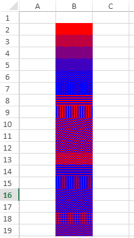
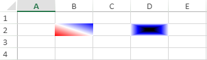
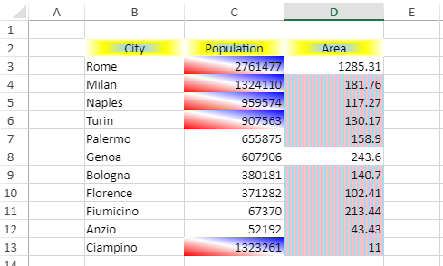

You can enhance cell appearance in a spreadsheet by applying pattern or gradient effects to the cells.
This feature helps users to add emphasis to cells in SpreadJS worksheet. It also empowers users to add simple patterns to the cells that contains text, when using the black and white printers, such that the text remains readable.
You can apply a pattern fill effect on a cell by using the BackColor property of the Style object. You can specify the pattern style, cell background color, and pattern color for the pattern fill effect.
Refer to the following image that uses pattern fill for the spreadsheet cells.

The following code applies the pattern fill effect on a range of cells in the worksheet.
| JavaScript |
Copy Code
|
|---|---|
$(document).ready(function () { // initializing Spread var spread = new GC.Spread.Sheets.Workbook(document.getElementById('ss'), { sheetCount: 1 }); // get the activesheet var activeSheet = spread.getSheet(0); // set the style for the cells with pattern fill for (i = 1; i < 19; i++) { var pat = { type: i, backgroundColor: "blue", patternColor: "red" }; style = new GC.Spread.Sheets.Style(); style.backColor = pat; activeSheet.setStyle(i, 1, style) } |
|
Gradient fill creates a blend between different colors. You can apply a gradient fill effect on a cell by using the BackColor property of the Style object. Using this property, you can either specify the gradient path fill style or gradient fill style for the cells.
Refer to the following image that uses gradient fill for the cells in a spreadsheet.

The following code applies the gradient fill effect on a range of cells in the worksheet.
| JavaScript |
Copy Code
|
|---|---|
$(document).ready(function () { // initializing Spread var spread = new GC.Spread.Sheets.Workbook(document.getElementById('ss'), { sheetCount: 1 }); // get the activesheet var activeSheet = spread.getSheet(0); // set the style for the cell with gradient fill var gra = { degree: 315, stops: [{ position: 0, color: "red" }, { position: 0.5, color: "white" }, { position: 1, color: "blue" },] }; style = new GC.Spread.Sheets.Style(); style.backColor = gra; activeSheet.setStyle(1, 1, style); // set the style for the cell with gradient path fill var gra2 = { type: "path", left: 0.4, top: 0.4, right: 0.6, bottom: 0.6, stops: [{ position: 0, color: "black" }, { position: 0.5, color: "blue" }, { position: 1, color: "white" },] }, style = new GC.Spread.Sheets.Style(); style.backColor = gra2; activeSheet.setStyle(1, 3, style) } |
|
For example, let's say you are working on data that covers the area-wise population in Italian cities. Here, we can use the pattern fill and gradient fill effects to add emphasis on the cells. We can highlight the header data, that is, the "City", "Population" and "Area" using the gradient path fill style. The Population data above average value is highlighted using the gradient fill style and the area data below average value is highlighted using pattern fill style.
Refer to the following image that uses pattern fill and gradient fill effects on the cells.

The following code adds pattern fill and gradient fill effects to the cells in the spreadsheet.
| JavaScript |
Copy Code
|
|---|---|
$(document).ready(function () { // initializing Spread var spread = new GC.Spread.Sheets.Workbook(document.getElementById('ss'), { sheetCount: 1 }); // get the activesheet var activeSheet = spread.getSheet(0); // create data var data = [ ["City", "Population", "Area"], ['Rome', 2761477, 1285.31], ['Milan', 1324110, 181.76], ['Naples', 959574, 117.27], ['Turin', 907563, 130.17], ['Palermo', 655875, 158.9], ['Genoa', 607906, 243.60], ['Bologna', 380181, 140.7], ['Florence', 371282, 102.41], ['Fiumicino', 67370, 213.44], ['Anzio', 52192, 43.43], ['Ciampino', 1323261, 11] ]; // set data activeSheet.setArray(1, 1, data); // set column width activeSheet.setColumnWidth(1, 110); activeSheet.setColumnWidth(2, 110); activeSheet.setColumnWidth(3, 110); // set the gradient path fill style for headers of data var gra2 = { type: "path", left: 0.4, top: 0.4, right: 0.6, bottom: 0.6, stops: [{ position: 0, color: "lightblue" }, { position: 0.5, color: "yellow" }, { position: 1, color: "white" },] }, style = new GC.Spread.Sheets.Style(); style.hAlign = GC.Spread.Sheets.HorizontalAlign.center; style.backColor = gra2; for (var i = 1; i < 4; i++) { activeSheet.setStyle(1, i, style) } // set the gradient fill style for 'Population' above average var gra = { degree: 315, stops: [{ position: 0, color: "red" }, { position: 0.5, color: "white" }, { position: 1, color: "blue" },] }; var style = new GC.Spread.Sheets.Style(); style.backColor = gra; activeSheet.conditionalFormats.addAverageRule(GC.Spread.Sheets.ConditionalFormatting.AverageConditionType.above, style, [new GC.Spread.Sheets.Range(2, 2, 11, 1)]); // set the pattern fill style for 'Area' below average var pat = { type: 8, backgroundColor: "lightblue", patternColor: "pink" }; style = new GC.Spread.Sheets.Style(); style.backColor = pat; activeSheet.conditionalFormats.addAverageRule(GC.Spread.Sheets.ConditionalFormatting.AverageConditionType.below, style, [new GC.Spread.Sheets.Range(2, 3, 11, 1)]); }); |
|